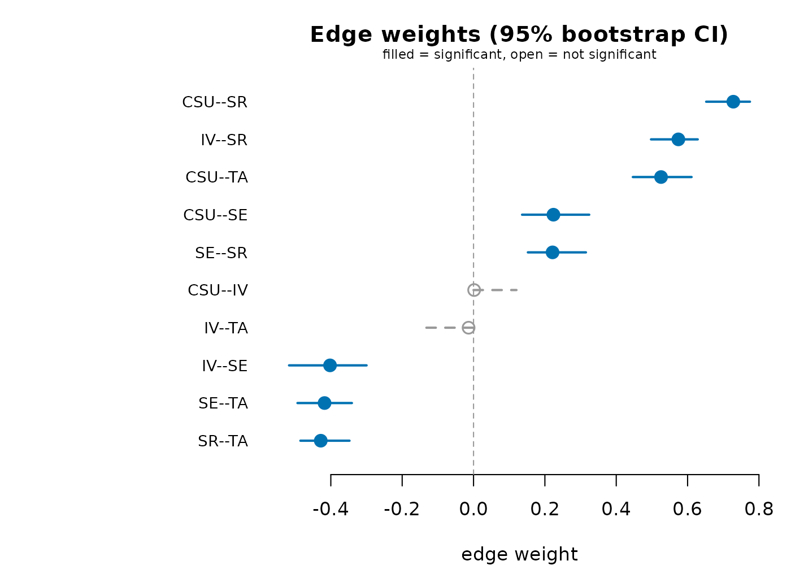
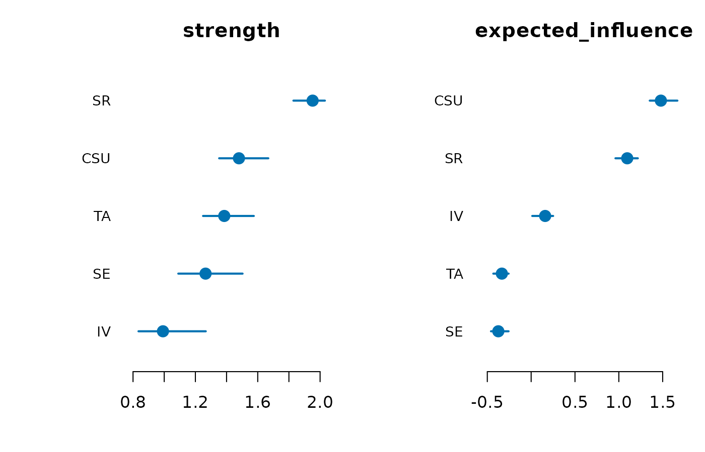
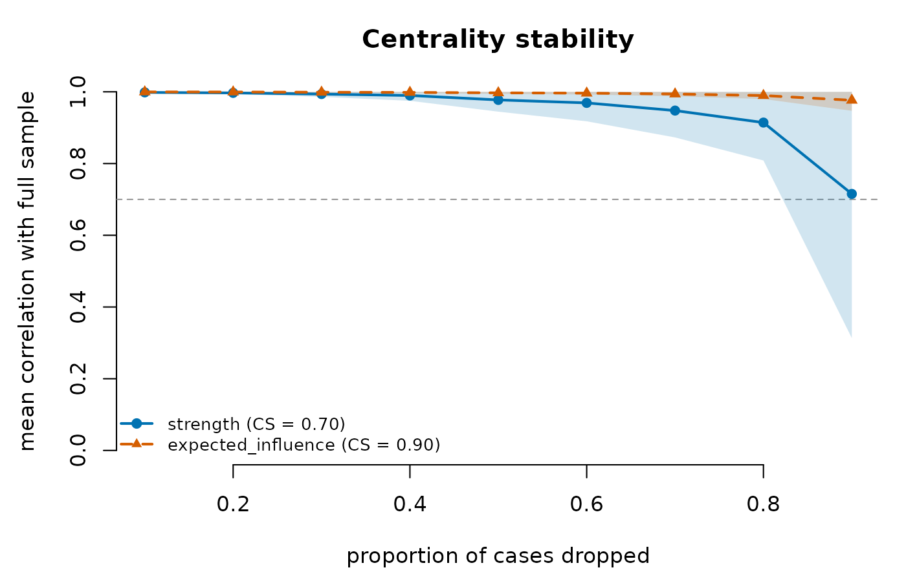
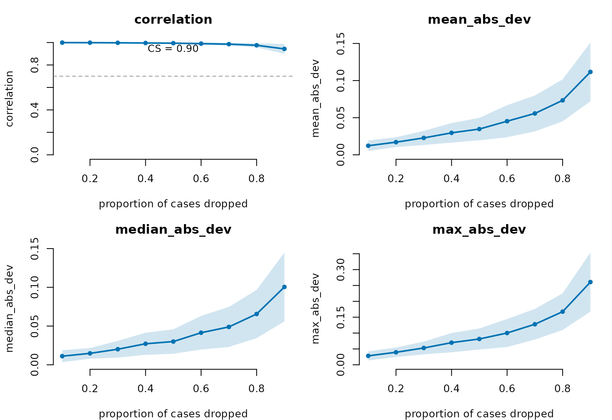
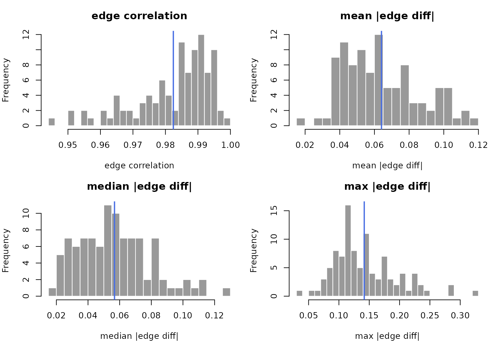

Edge-weight stability and split-half reliability
Mohammed Saqr
University of Eastern FinlandSonsoles López-Pernas
University of Eastern FinlandSource:
vignettes/articles/network-reliability.Rmd
network-reliability.RmdCan the strongest edges and most prominent nodes in a psychological network be trusted to remain similar in another sample? Consider a network of self-efficacy, learning strategies and test anxiety, in which the constructs are nodes and their estimated associations are edges. In a partial correlation network, each edge describes an association adjusted for the other variables, while centrality measures summarise aspects of each node’s position. These tools allow researchers to explore multivariate patterns rather than examine every construct in isolation (Borsboom et al., 2021). Yet the interpretation of edge weights and centrality depends on the estimation method and available data, making stability and reliability important considerations (Isvoranu & Epskamp, 2023).
Network methods have been used in education to study the relationships among learning processes and how these relationships vary across contexts and time. Saqr et al. (2024) introduce psychological networks as an approach to analysing learning and complex learning processes. Applications include networks of students’ monitoring events across phases of regulation (Malmberg et al., 2022) and the temporal dynamics of self-regulation during academic writing (Saqr et al., 2021). These studies illustrate the value of examining patterns of relationships, but an apparent connection or prominent node in an estimated network should not automatically be treated as a reproducible finding.
A network fitted to one sample will generally differ from a network fitted to another sample from the same population. Consequently, applied researchers need to assess uncertainty in individual edge weights, whether nodes can be distinguished in centrality, and how much the network changes when observations are omitted or divided into groups. Resampling provides an empirical way to investigate these questions by repeatedly estimating networks from the available observations (Epskamp et al., 2018). Assessing and clearly reporting such uncertainty is also part of good practice in cross-sectional network analysis (Burger et al., 2023). These checks describe the robustness of an estimated network; they do not establish causal relationships or guarantee replication in a new population.
This article demonstrates five complementary diagnostics in
psychnets: bootstrap intervals for edges and centrality,
bootstrap comparisons of nodes, case-dropping stability of centrality,
case-dropping reliability of edge weights, and split-half reliability.
The worked example uses questionnaire responses generated by a large
language model, rather than observations of students, and therefore
illustrates methods rather than substantive findings about learners. For
each diagnostic, we explain the question it addresses, show the relevant
output, and discuss what researchers can reasonably report. The
functions use a consistent network-estimation interface, allowing the
same workflow to be used with other estimators.
Because the procedures involve random resampling, setting the seed makes the illustrative results reproducible.
Data
SRL_Claude contains 300 sets of responses to the
Motivated Strategies for Learning Questionnaire generated by the large
language model Claude for a study of responses to psychological surveys
(Vogelsmeier et al., 2025). The model-generated responses are unusually
internally consistent and produce several large estimated edges. They
make the numerical examples easy to inspect, but do not provide evidence
about relationships among constructs in real students.
-
Nodes: five construct scores on a scale from 1 to
7:
CSU(cognitive strategy use),IV(intrinsic value),SE(self-efficacy),SR(self-regulation) andTA(test anxiety). - Observations: one row per respondent; the data are complete.
head(SRL_Claude)
#> CSU IV SE SR TA
#> 1 4.615385 6.444444 4.555556 4.777778 4.00
#> 2 5.692308 7.000000 5.555556 6.222222 3.00
#> 3 5.692308 7.000000 5.777778 6.666667 3.75
#> 4 5.461538 6.222222 5.777778 5.777778 4.75
#> 5 4.846154 5.333333 5.000000 5.333333 3.75
#> 6 4.538462 4.333333 5.777778 4.000000 5.00The main analyses use an EBIC graphical lasso
(method = "glasso") to estimate a regularised network of
partial correlations. All five diagnostics therefore assess the same
type of fitted network.
How precise is each edge?
net_boot() draws samples of observations with
replacement, estimates a network for each sample and summarises the
resulting edge weights. The output provides each observed weight, the
bootstrap mean, a 95% percentile interval and the proportion of
resamples in which the edge has a non-zero estimate. The
significant flag indicates that the percentile interval
excludes zero; it should not be read as proof of an underlying
relationship. For substantive research, at least 1,000 bootstrap samples
provide a more useful basis for assessing precision. Here, 200 resamples
keep the demonstration manageable.
b <- net_boot(SRL_Claude, method = "glasso", n_boot = 200, cores = 1)
b
#> <psychnet_bootstrap> glasso, 200 resamples, 95% CI
#> 10 edges (8 significant), 5 nodes, measures: strength, expected_influence
as.data.frame(b)
#> from to observed mean lower upper prop_nonzero
#> 1 CSU IV 0.001744267 0.02777141 0.0000000 0.1202986 0.550
#> 2 CSU SE 0.223973564 0.22825629 0.1360369 0.3243276 1.000
#> 3 IV SE -0.402239002 -0.40747351 -0.5171210 -0.2997294 1.000
#> 4 CSU SR 0.728177591 0.72069631 0.6520409 0.7748107 1.000
#> 5 IV SR 0.574170376 0.55984489 0.4974457 0.6284297 1.000
#> 6 SE SR 0.221496430 0.22481115 0.1522627 0.3150743 1.000
#> 7 CSU TA 0.525584044 0.52512504 0.4465139 0.6111719 1.000
#> 8 IV TA -0.013854928 -0.03375546 -0.1320652 0.0245725 0.755
#> 9 SE TA -0.417575459 -0.41986895 -0.4934429 -0.3408875 1.000
#> 10 SR TA -0.428181457 -0.42032870 -0.4852677 -0.3476119 1.000
#> significant
#> 1 FALSE
#> 2 TRUE
#> 3 TRUE
#> 4 TRUE
#> 5 TRUE
#> 6 TRUE
#> 7 TRUE
#> 8 FALSE
#> 9 TRUE
#> 10 TRUEEight of the ten edges have percentile intervals that exclude zero,
and all eight are selected in every bootstrap sample. The largest
positive edge, CSU–SR, has an observed weight
of 0.73 and an interval from 0.65 to 0.77. By contrast,
CSU–IV has a weight of 0.002, an interval from
0 to 0.12 and a non-zero estimate in 55% of resamples. The
IV–TA edge has a weight of -0.014, an interval
from -0.13 to 0.02 and a non-zero estimate in 75.5% of resamples. The
latter two intervals include zero, so these data do not support
confident interpretation of those edges. The plot presents the edge
estimates alongside their intervals, ordered by weight:
plot(b)
How precise is each node’s centrality?
The bootstrap samples also provide intervals for node centrality. Strength is the sum of the absolute weights of a node’s edges, whereas expected influence sums signed edge weights. This distinction matters when the network contains both positive and negative associations.
as.data.frame(b, what = "centrality")
#> node strength strength_lower strength_upper expected_influence
#> 1 CSU 1.4794795 1.3523996 1.667857 1.4794795
#> 2 IV 0.9920086 0.8349704 1.266730 0.1598207
#> 3 SE 1.2652845 1.0903270 1.502809 -0.3743445
#> 4 SR 1.9520259 1.8288036 2.030832 1.0956629
#> 5 TA 1.3851959 1.2491191 1.574835 -0.3340278
#> expected_influence_lower expected_influence_upper
#> 1 1.35239959 1.6678566
#> 2 0.01245256 0.2507549
#> 3 -0.45804609 -0.2573138
#> 4 0.96124498 1.2166942
#> 5 -0.43162878 -0.2568683
plot(b, type = "centrality")
Self-regulation (SR) has the highest observed strength,
1.95, with a bootstrap interval from 1.83 to 2.03. This interval does
not overlap the interval of any other node. Intrinsic value
(IV) has the lowest observed strength, 0.99, with an
interval from 0.83 to 1.27. The intervals for cognitive strategy use,
self-efficacy and test anxiety overlap, so their ranking cannot be
inferred from separate intervals alone. Expected influence answers a
different question: self-efficacy and test anxiety have negative values
(-0.37 and -0.33), reflecting the balance of their signed edges. The
next analysis compares strengths directly.
Which nodes can be ranked?
difference_test() compares the centralities of pairs of
nodes or the weights of pairs of edges. It calculates each difference
across the existing bootstrap samples, then reports its percentile
interval and a two-sided bootstrap p-value. The stored samples from
net_boot() are reused rather than fitted again. For the ten
pairwise strength comparisons, p_adjust = "BH" applies a
false discovery rate adjustment to the p-values (Benjamini &
Hochberg, 1995). An interval containing zero indicates that the
bootstrap differences do not clearly distinguish the pair.
difference_test(b, type = "strength", p_adjust = "BH")
#> item1 item2 value1 value2 obs_diff lower upper
#> 1 CSU IV 1.4794795 0.9920086 0.48747089 0.241546367 0.66372411
#> 2 CSU SE 1.4794795 1.2652845 0.21419501 0.038286544 0.42634973
#> 3 IV SE 0.9920086 1.2652845 -0.27327588 -0.334413124 -0.13532664
#> 4 CSU SR 1.4794795 1.9520259 -0.47254639 -0.623609013 -0.21321640
#> 5 IV SR 0.9920086 1.9520259 -0.96001728 -1.093928157 -0.59055176
#> 6 SE SR 1.2652845 1.9520259 -0.68674140 -0.877109385 -0.38029431
#> 7 CSU TA 1.4794795 1.3851959 0.09428358 0.003900685 0.19887099
#> 8 IV TA 0.9920086 1.3851959 -0.39318731 -0.563676398 -0.15302913
#> 9 SE TA 1.2652845 1.3851959 -0.11991143 -0.332646886 0.08003091
#> 10 SR TA 1.9520259 1.3851959 0.56682997 0.285722615 0.69319578
#> p_value significant
#> 1 0.00000000 TRUE
#> 2 0.04444444 TRUE
#> 3 0.00000000 TRUE
#> 4 0.00000000 TRUE
#> 5 0.00000000 TRUE
#> 6 0.00000000 TRUE
#> 7 0.04444444 TRUE
#> 8 0.00000000 TRUE
#> 9 0.26000000 FALSE
#> 10 0.00000000 TRUENine of the ten comparisons have intervals excluding zero and are flagged as significant in the output. Self-regulation has greater strength than every other node, with adjusted p-values reported as 0 for these comparisons at the available bootstrap resolution. Cognitive strategy use also exceeds self-efficacy and test anxiety (adjusted p = 0.044 for each comparison). The only pair not distinguished is self-efficacy and test anxiety: their observed difference is -0.12, with an interval from -0.33 to 0.08 and an adjusted p-value of 0.26. Thus, self-regulation can be placed first and intrinsic value last in this example, but the evidence does not establish an ordering between self-efficacy and test anxiety.
Is the centrality ranking stable when cases are dropped?
net_stability() re-estimates the network on random
subsets that drop an increasing proportion of the respondents and
correlates the centralities of each subset with those of the full
sample. The correlation-stability coefficient (CS-coefficient) is the
largest proportion of cases that can be dropped while the correlation
stays at or above 0.7 in at least 95% of the subsets (Epskamp et al.,
2018).
st <- net_stability(SRL_Claude, method = "glasso", iter = 100)
st
#> <psychnet_stability> glasso, 100 subsets/proportion
#> CS-coefficient (pearson cor > 0.70 in > 95% of subsets):
#> strength 0.70
#> expected_influence 0.90The reported CS-coefficients are 0.70 for strength and 0.90 for expected influence. Under the diagnostic’s criterion, a drop proportion of 0.70 retains correlations of at least 0.7 with full-sample strength in at least 95% of the sampled subsets. Epskamp et al. (2018) recommend a coefficient above 0.25, preferably above 0.5, for interpreting centrality. Both estimates comfortably exceed these reference values. This supports the stability of the centrality pattern in the example, although it does not resolve every pairwise difference. The plot displays mean correlations by drop proportion, with a band showing one standard deviation and a horizontal threshold at 0.7:
plot(st)
Is the edge structure stable when cases are dropped?
net_casedrop_reliability() applies the same
case-dropping design to the edges. At each drop proportion it compares
the edge weights of each subset with those of the full sample through
their correlation and through the mean, median and largest absolute
difference. The edge-weight CS-coefficient is defined as for
centrality.
cd <- net_casedrop_reliability(SRL_Claude, method = "glasso", iter = 100)
cd
#> # edge-weight stability: glasso | CS = 0.90 (pearson cor > 0.70 in > 95% of subsets)
#> metric drop_prop actual_drop mean sd n_valid
#> 1 mean_abs_dev 0.1 0.1 0.01223453 0.007078789 100
#> 2 mean_abs_dev 0.2 0.2 0.01702795 0.006598546 100
#> 3 mean_abs_dev 0.3 0.3 0.02274269 0.009531099 100
#> 4 mean_abs_dev 0.4 0.4 0.02958753 0.013176682 100
#> 5 mean_abs_dev 0.5 0.5 0.03467924 0.015125426 100
#> 6 mean_abs_dev 0.6 0.6 0.04525305 0.021570568 100
#> 7 mean_abs_dev 0.7 0.7 0.05571419 0.024151750 100
#> 8 mean_abs_dev 0.8 0.8 0.07334800 0.028299586 100
#> 9 mean_abs_dev 0.9 0.9 0.11167002 0.039600394 100
#> 10 median_abs_dev 0.1 0.1 0.01113632 0.007721301 100
#> 11 median_abs_dev 0.2 0.2 0.01477376 0.006876153 100
#> 12 median_abs_dev 0.3 0.3 0.02009654 0.010843466 100
#> 13 median_abs_dev 0.4 0.4 0.02714279 0.014258682 100
#> 14 median_abs_dev 0.5 0.5 0.03001670 0.015792390 100
#> 15 median_abs_dev 0.6 0.6 0.04140568 0.021707532 100
#> 16 median_abs_dev 0.7 0.7 0.04887775 0.025843871 100
#> 17 median_abs_dev 0.8 0.8 0.06558498 0.031147359 100
#> 18 median_abs_dev 0.9 0.9 0.10044642 0.044467062 100
#> 19 correlation 0.1 0.1 0.99918303 0.001171843 100
#> 20 correlation 0.2 0.2 0.99865420 0.001195384 100
#> 21 correlation 0.3 0.3 0.99753130 0.002272435 100
#> 22 correlation 0.4 0.4 0.99571692 0.003849700 100
#> 23 correlation 0.5 0.5 0.99410291 0.005682065 100
#> 24 correlation 0.6 0.6 0.99008016 0.009930387 100
#> 25 correlation 0.7 0.7 0.98536877 0.012430219 100
#> 26 correlation 0.8 0.8 0.97543937 0.018315939 100
#> 27 correlation 0.9 0.9 0.94321695 0.043557770 100
#> 28 max_abs_dev 0.1 0.1 0.02827627 0.014355432 100
#> 29 max_abs_dev 0.2 0.2 0.03945443 0.015041128 100
#> 30 max_abs_dev 0.3 0.3 0.05301608 0.020119036 100
#> 31 max_abs_dev 0.4 0.4 0.06977815 0.030387123 100
#> 32 max_abs_dev 0.5 0.5 0.08135286 0.033159361 100
#> 33 max_abs_dev 0.6 0.6 0.10019480 0.044161063 100
#> 34 max_abs_dev 0.7 0.7 0.12779105 0.048349703 100
#> 35 max_abs_dev 0.8 0.8 0.16748415 0.057766787 100
#> 36 max_abs_dev 0.9 0.9 0.26079883 0.093049603 100The edge-weight CS-coefficient is 0.90. Mean correlations between subset and full-sample edge weights are 0.999 after dropping 10% of cases and 0.943 after dropping 90%, suggesting that the overall arrangement of edge weights is retained across the sampled subsets. This does not mean that individual estimates remain equally precise. The mean absolute deviation rises from 0.012 to 0.112 across these drop proportions, while the mean maximum absolute deviation rises from 0.028 to 0.261. At the largest drop proportion, appreciable differences in individual edge estimates can therefore coexist with a high overall correlation.
plot(cd)
Does the network replicate across halves of the sample?
net_split_reliability() divides the sample at random
into two halves, estimates a network on each, and compares the two sets
of edges, repeating the split many times. The result has one row per
comparison measure, with its mean, standard deviation and the 2.5% and
97.5% quantiles across splits.
rel <- net_split_reliability(SRL_Claude, method = "glasso", iter = 100)
rel
#> # split-half reliability: glasso | 100 iterations (50/50 split)
#> metric mean sd lower upper n_valid
#> 1 mean_abs_dev 0.06406132 0.02201012 0.03319670 0.1092927 100
#> 2 median_abs_dev 0.05674286 0.02297601 0.02204948 0.1086049 100
#> 3 correlation 0.98243129 0.01208858 0.95313106 0.9960735 100
#> 4 max_abs_dev 0.14177087 0.05219793 0.06749545 0.2635560 100Across 100 random 50/50 splits, the mean correlation between the two sets of edge weights is 0.982. The 2.5th and 97.5th percentiles of the correlations are 0.953 and 0.996. Each half contains 150 observations, but the halves are repeatedly drawn from the same dataset, not from two new independent studies. The mean absolute edge-weight deviation across splits is 0.064, and the mean of the maximum absolute deviations is 0.142. These results indicate strong agreement in the overall edge pattern within this dataset, alongside some variation in particular edge weights; they do not by themselves demonstrate external replication.
plot(rel)
Do the diagnostics apply to other estimators?
Each diagnostic refits the network through
psychnet(method = ), so it applies to any estimator. With
the unregularized partial correlation network:
net_casedrop_reliability(SRL_Claude, method = "pcor", iter = 100)
#> # edge-weight stability: pcor | CS = 0.90 (pearson cor > 0.70 in > 95% of subsets)
#> metric drop_prop actual_drop mean sd n_valid
#> 1 mean_abs_dev 0.1 0.1 0.01407596 0.005722099 100
#> 2 mean_abs_dev 0.2 0.2 0.02103369 0.008735917 100
#> 3 mean_abs_dev 0.3 0.3 0.03135441 0.013653667 100
#> 4 mean_abs_dev 0.4 0.4 0.03533740 0.015310550 100
#> 5 mean_abs_dev 0.5 0.5 0.04366644 0.019115731 100
#> 6 mean_abs_dev 0.6 0.6 0.05544954 0.022945464 100
#> 7 mean_abs_dev 0.7 0.7 0.06709600 0.027703213 100
#> 8 mean_abs_dev 0.8 0.8 0.08590790 0.034829376 100
#> 9 mean_abs_dev 0.9 0.9 0.13930127 0.050714693 100
#> 10 median_abs_dev 0.1 0.1 0.01255458 0.005728588 100
#> 11 median_abs_dev 0.2 0.2 0.01868817 0.009034031 100
#> 12 median_abs_dev 0.3 0.3 0.02904228 0.014722232 100
#> 13 median_abs_dev 0.4 0.4 0.03149873 0.015085832 100
#> 14 median_abs_dev 0.5 0.5 0.03877024 0.019599609 100
#> 15 median_abs_dev 0.6 0.6 0.05061707 0.025013217 100
#> 16 median_abs_dev 0.7 0.7 0.06252573 0.027848899 100
#> 17 median_abs_dev 0.8 0.8 0.07818641 0.038656186 100
#> 18 median_abs_dev 0.9 0.9 0.12953302 0.052834482 100
#> 19 correlation 0.1 0.1 0.99918308 0.000782910 100
#> 20 correlation 0.2 0.2 0.99817888 0.001589584 100
#> 21 correlation 0.3 0.3 0.99592459 0.003917103 100
#> 22 correlation 0.4 0.4 0.99485719 0.004399123 100
#> 23 correlation 0.5 0.5 0.99200702 0.006954841 100
#> 24 correlation 0.6 0.6 0.98779973 0.010788655 100
#> 25 correlation 0.7 0.7 0.98233205 0.014669997 100
#> 26 correlation 0.8 0.8 0.97160972 0.021543350 100
#> 27 correlation 0.9 0.9 0.93267114 0.045277930 100
#> 28 max_abs_dev 0.1 0.1 0.03107886 0.012465500 100
#> 29 max_abs_dev 0.2 0.2 0.04640442 0.017538560 100
#> 30 max_abs_dev 0.3 0.3 0.06831509 0.029755783 100
#> 31 max_abs_dev 0.4 0.4 0.07758760 0.031489940 100
#> 32 max_abs_dev 0.5 0.5 0.09775775 0.041505461 100
#> 33 max_abs_dev 0.6 0.6 0.12091082 0.046760671 100
#> 34 max_abs_dev 0.7 0.7 0.14489778 0.060423740 100
#> 35 max_abs_dev 0.8 0.8 0.19218553 0.071761675 100
#> 36 max_abs_dev 0.9 0.9 0.29803031 0.104489216 100The unregularised partial correlation network also has an edge-weight
CS-coefficient of 0.90. Its mean absolute deviations exceed those of the
graphical lasso at each reported drop proportion, reaching 0.139 rather
than 0.112 when 90% of cases are dropped. The absence of regularisation
may contribute to this difference, but these figures alone do not
establish its cause. Each diagnostic also accepts group networks fitted
using psychnet(..., group = ) and returns results for each
group.
When to use which diagnostic
| Question | Verb | Read the result with |
|---|---|---|
| How precise is each edge and centrality? | net_boot() |
as.data.frame(b),
as.data.frame(b, what = "centrality"),
plot()
|
| Do two edges or two nodes differ? | difference_test() |
the returned table, plot()
|
| Is the centrality order stable when cases are dropped? | net_stability() |
as.data.frame(st, what = "cs"),
as.data.frame(st), plot()
|
| Is the edge structure stable when cases are dropped? | net_casedrop_reliability() |
the returned table, plot()
|
| Does the network replicate across halves? | net_split_reliability() |
the returned table, plot()
|
- Report bootstrap intervals for edges of substantive interest. Treat an interval containing zero as insufficient evidence to interpret that edge confidently, rather than as proof that the relationship is absent.
- Use pairwise difference tests alongside case-dropping stability when discussing node rankings. A CS-coefficient below 0.25 warrants particular caution about centrality interpretation.
- Distinguish uncertainty in a particular edge from agreement in the network as a whole. Here, high case-dropping and split-half correlations coexist with two edge intervals that include zero.
- These procedures assume independent observations. For repeated observations from the same individuals, resampling must respect the dependence between observations from each individual.
How to cite this article
Saqr, M., & López-Pernas, S. (2026). Edge-weight stability and split-half reliability. psychnets. https://doi.org/10.5281/zenodo.24567528 · HTML · PDF
References
Benjamini, Y., & Hochberg, Y. (1995). Controlling the false discovery rate: A practical and powerful approach to multiple testing. Journal of the Royal Statistical Society: Series B (Methodological), 57(1), 289-300. doi:10.1111/j.2517-6161.1995.tb02031.x
Borsboom, D., Deserno, M. K., Rhemtulla, M., Epskamp, S., Fried, E. I., McNally, R. J., Robinaugh, D. J., Perugini, M., Dalege, J., Costantini, G., Isvoranu, A.-M., Wysocki, A. C., van Borkulo, C. D., van Bork, R., & Waldorp, L. J. (2021). Network analysis of multivariate data in psychological science. Nature Reviews Methods Primers, 1, 58. doi:10.1038/s43586-021-00055-w
Burger, J., Isvoranu, A.-M., Lunansky, G., Haslbeck, J. M. B., Epskamp, S., Hoekstra, R. H. A., Fried, E. I., Borsboom, D., & Blanken, T. F. (2023). Reporting standards for psychological network analyses in cross-sectional data. Psychological Methods, 28(4), 806-824. doi:10.1037/met0000471
Epskamp, S., Borsboom, D., & Fried, E. I. (2018). Estimating psychological networks and their accuracy: A tutorial paper. Behavior Research Methods, 50(1), 195-212. doi:10.3758/s13428-017-0862-1
Isvoranu, A.-M., & Epskamp, S. (2023). Which estimation method to choose in network psychometrics? Deriving guidelines for applied researchers. Psychological Methods, 28(4), 925-946. doi:10.1037/met0000439
Malmberg, J., Saqr, M., Järvenoja, H., & Järvelä, S. (2022). How the monitoring events of individual students are associated with phases of regulation: A network analysis approach. Journal of Learning Analytics, 9(1), 77-92. doi:10.18608/jla.2022.7429
Saqr, M., Beck, E., & López-Pernas, S. (2024). Psychological networks: A modern approach to analysis of learning and complex learning processes. In M. Saqr & S. López-Pernas (Eds.), Learning analytics methods and tutorials: A practical guide using R (pp. 639-671). Springer. doi:10.1007/978-3-031-54464-4_19
Saqr, M., Peeters, W., & Viberg, O. (2021). The relational, co-temporal, contemporaneous, and longitudinal dynamics of self-regulation for academic writing. Research and Practice in Technology Enhanced Learning, 16, 29. doi:10.1186/s41039-021-00175-7
Vogelsmeier, L. V. D. E., Oliveira, E., Misiejuk, K., López-Pernas, S., & Saqr, M. (2025). Delving into the psychology of machines: Exploring the structure of self-regulated learning via LLM-generated survey responses. Computers in Human Behavior, 173, 108769. doi:10.1016/j.chb.2025.108769